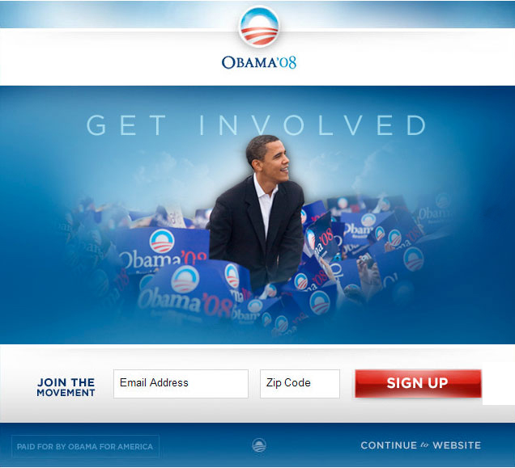
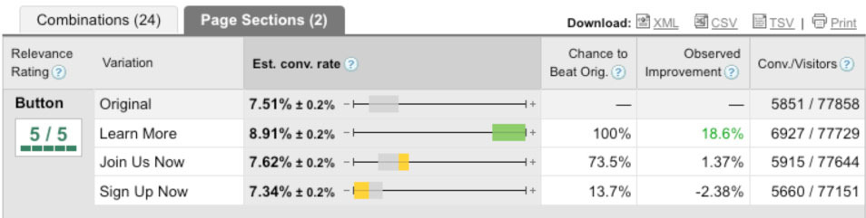
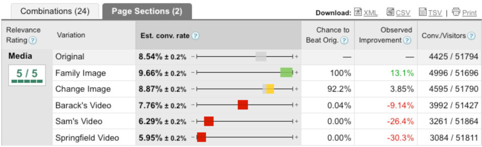
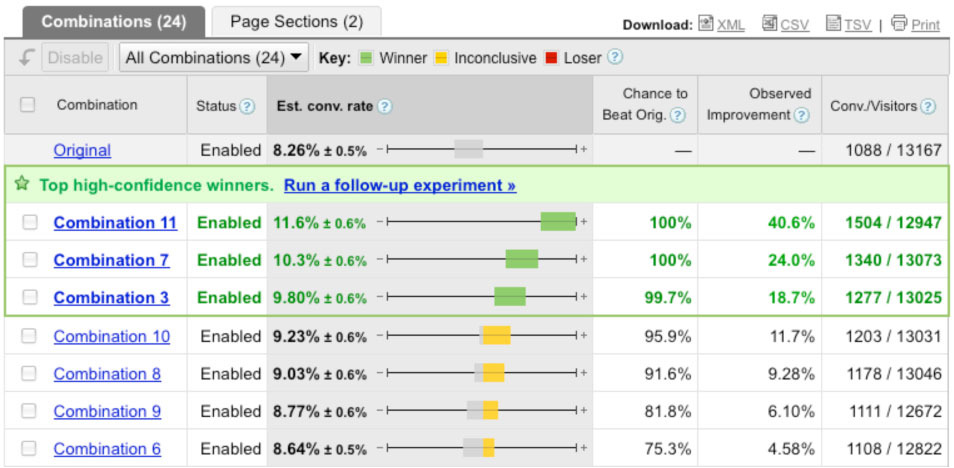
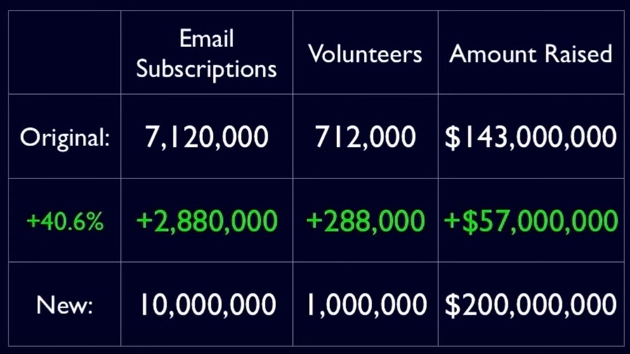

What is A/B testing?
A/B Testing is about to compare two versions of content which are mostly identical except from one difference that might affect user's behaviour.
Why is it useful?
- Visitors keep a website alive
- Every change has an impact on them
- You can find the best way to keep the users
- You can find out how to reach what you want them to do
About the book
-
Authors were product managers at Google, left because of the Barack Obama campaign
-
Online donations to the campaign came from subscribers to the email newsletters.
They had 1 website to get as more as they can
Obama Campaign website in 2008

Button variation results

Media variation results

Combination Results (Button+Media)

Result of the experiments

Conversions under the hood
-
There are 2 types of conversions
-
1. Micro conversions
-
2. Macro conversions
Steps of A/B Testing
-
1. Analyze Data
-
2. Form a hypotesis
-
3. Construct an experiment
-
4. Interpret results
1. Analyze Data
-
2 important things: Quantitative & Qualitative data
2. Form a hypotesis
-
"If [variable], then [Result], because [Rationale]."
-
If the call-to-action is shorter, the conversion rate will increase
-
If the call-to-action text is changed to "Complete My Order", the conversion
rates in the checkout will increase, because the cop is more specific and
personalized
3. How to Construct an experiment
-
Content
-
Design
-
Tech
4. Evaluate Results
-
How confident am I that the observed difference from
my experiment was not due to chance?
-
95% Statistical Significance = 5% probability that
the observed difference was due to chance
-
High statistical confidence = Lower risk of implementing a test that won by chance
-
Optimizely Statcalculator
4. Evaluate results - cases
-
Variation wins:
Launch the variation or update your website
-
Original wins:
Lean why hypotesis was incorrect
-
In either case:
Think about what to test next
Some Tips to have successful tests
Who else uses AB Testing?
{kind=link}
{kind=link}
{kind=link}
{kind=link}